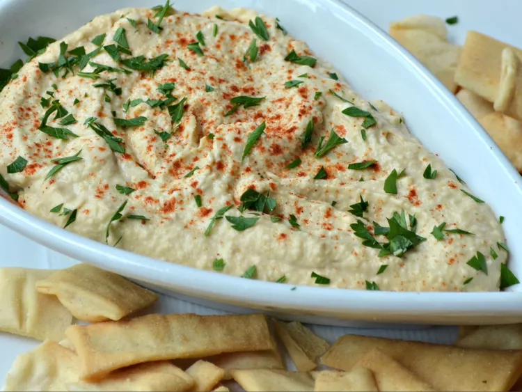

Note: This webpage was made for educational purposes. You can view the original recipe webpage here.
I make this hummus at least once a week — it's so simple to make in just 10 minutes, yet it tastes delicious! I got this recipe from my late grandfather who was of Lebanese descent. Serve with warm pita bread.
Place chickpeas, tahini, olive oil, lemon juice, water, garlic, and cumin into a food processor and process until smooth, about 1 minute.
Transfer to a bowl and sprinkle top of hummus with paprika and fresh parsley.